Control pasivo de radiación solar en edificaciones
Contents
11. Control pasivo de radiación solar en edificaciones#
11.1. Introducción#
Hasta ahora hemos revisado tecnologías de conversión de energía solar. En estas aplicaciones el objetivo es convertir eficientemente la mayor cantidad de radiación solar.
Sin embargo, hay situaciones donde la exposición solar induce efectos indeseables, tales como sobrecalentamiento de ambientes, degradación de materiales o efectos dañinos en la piel.
Particularmente en edificios y hogares, el aumento de la temperatura en días cálidos por exceso de radiación solar conduce a un mayor consumo eléctrico asociado a sistemas de acondicionamiento de aire. Por el contrario, en invierno, necesitamos aprovechar el calor del sol al máximo para reducir el consumo por calefacción. El manejo eficiente de la energía solar térmica en edificios, así, juega un rol fundamental en la reducción de gases de efecto invernadero.
En esta unidad revisaremos algunas tecnologías de manejo pasivo (sin electricidad) de radiación solar en edificaciones.
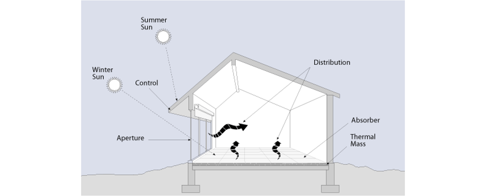{kind=link}
11.2. Masa térmica y desface térmico en materiales de construcción#
El calor puede ser almacenado en materiales de construcción para reducir la temperatura interior, reducir las cargas de enfriamiento, o para retrasar el momento donde la carga térmica es máxima.
En arquitectura y construcción, la capacidad de un material para almacenar calor se conoce como, masa térmica y corresponde al producto entre la densidad y el calor específico del material.
{kind=link}
Por otro lado, el desface térmico, asociado a la capacidad del material para liberar este calor, es también una propiedad relevante, ya que nos permite reducir las fluctuaciones asociadas a los cambios de temperatura externos.
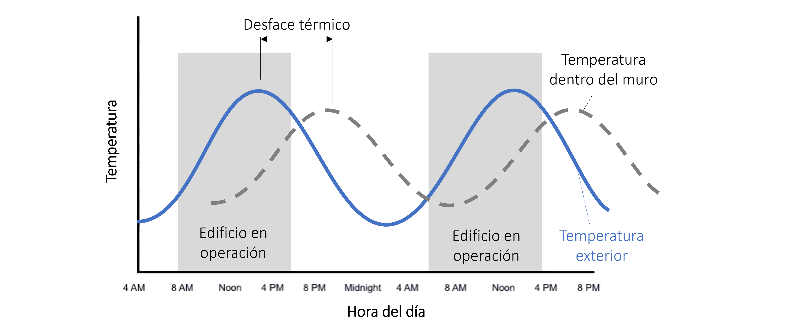{kind=link}
Esta característica depende de diversos factores, tales como la difusividad térmica, la diferencia de temperaturas entre la estructura y el aire circundante, el espesor del material, efectos convectivos asociados a la exposición a corrientes de aire, rugosidad de la superficie, color, etc.
Un diseño adecuado de la masa térmica y el desface térmico de una estructura permite un manejo eficiente de las ganancias por radiación solar.
Un buen ejemplo es el muro de Trombe, el cual consiste en un muro de concreto separado de un vidrio y expuesto a la radiación solar.
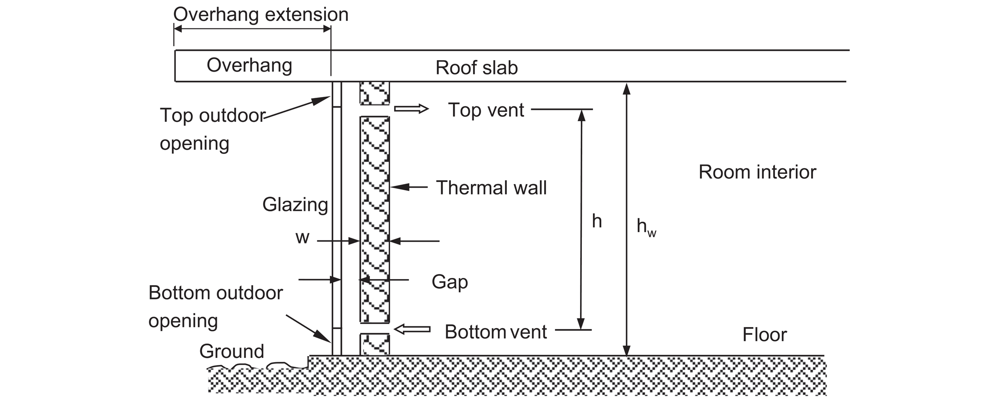{kind=link}
El sistema opera de forma similar a un colector solar en base a aire. El muro está cubierto por una pintura de color oscuro para maximizar la absorción de radiación, y tiene dos aperturas, una en la parte superior y otra en la parte inferior del muro.
Durante el invierno, el calor almacenado en el muro de concreto es liberado hacia la cámara de aire generando un efecto de calefacción por convección natural. El aire frio entra por la parte inferior del muro y sale por la parte superior.
Durante el verano, el muro es cubierto mediante percianas metálicas para evitar el exceso de radiación. Una apertura en la parte inferior del vidrio es descubiertas para permitir la ventilación hacia el interior. En la parte superior del vidrio, una segunda apertura permite el escape del aire caliente dentro de la habitación.
Existen muchos diseños basados en el principio de un muro de Trombe, algunos con parades inclinadas o en base a colectores de aire en la pared.
from IPython.display import YouTubeVideo
YouTubeVideo('N6QOZGgbj-g', width=700, height=400)
Lo más importante es la dirección donde debe apuntar este muro. En el hemisferio norte el muro debe apuntar hacia el sur, mientras que en el hemisferio sur, el muro debe apuntar preferentemente hacia la dirección norte.
11.3. Manejo térmico a través de ventanas#
Otro elemento importante para el manejo solar térmico son las ventanas. Dependiendo del diseño, una ventana puede ser utilizada para manejar las ganancias y pérdidas de energía por radiación.
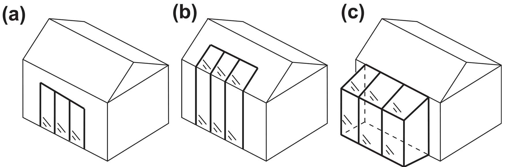{kind=link}
En la figura se muestran tres diseños de ventanas utilizados para este propósito. En todos los casos, la cara vertical debe apuntar hacia el norte (sur para hemisferio norte) para maximizar la captura de radiación solar.]
A mayor área expuesta a la radiación solar, mayor será el aporte energético para calefacción. El diseño adecuado, así, debe considerar un buen balance entre la radiación recibida durante el verano y el invierno.
Por ejemplo, el diseño (a) es preferible en lugares cálidos o con variaciones de temperatura altas, ya que reduce la exposición solar durante el verano.
Los aleros sobre las ventanas, también sirven como elementos de control de radiación solar. Aunque generalmente el diseño de estos va asociado a otros factores, como canalización de lluvias, la sombra generada por el alero sobre una ventana permite reducir o aumentar la exposición a la radiación solar.
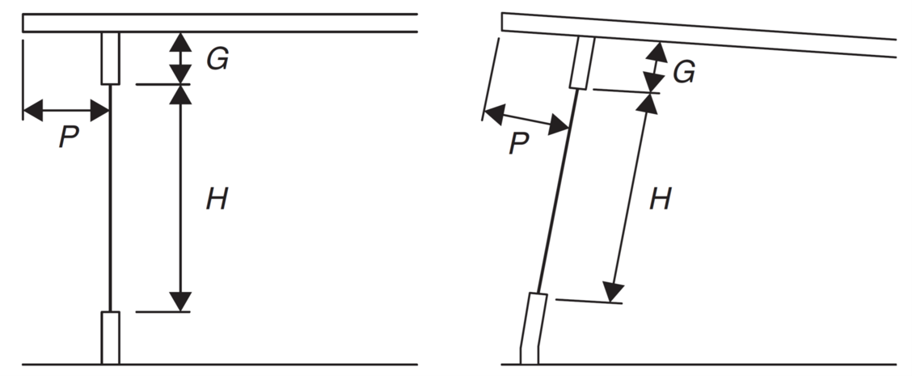{kind=link}
En ocaciones, la sección de la ventana es inclinada para maximizar las ganancias por radiación térmica
11.4. Ventanas inteligentes#
La principal función de las ventanas es permitir el paso de la luz. Esta luz, sin embargo, corresponde a solo una pequeña porción del espectro solar.
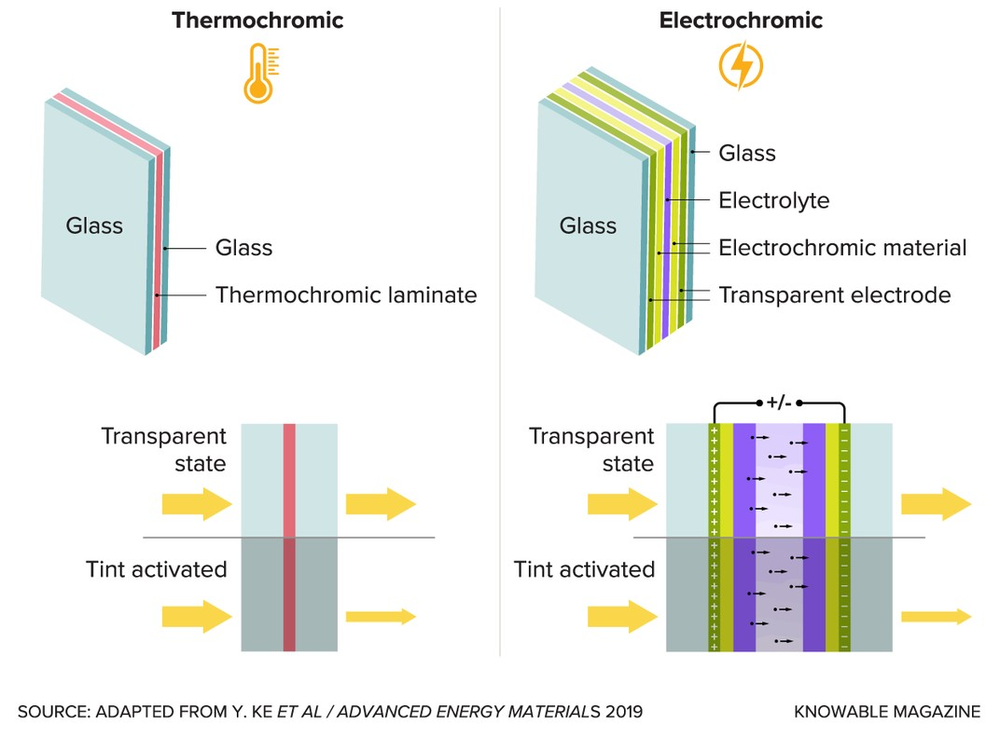{kind=link}
Las ventanas inteligentes son materiales capaces de modificar sus propiedades ópticas frente a cambios de temperatura (termocrómicas), o de voltaje (eléctrocrómicas), para así modular el paso de la radiación hacia el interior de un ambiente.
Dependiendo de la aplicación, una ventana inteligente puede ser diseñada para regular el paso de la radiación solar visible, UV o del infrarojo cercano (NIR).
Debido a su caracter pasivo, en esta unidad nos enfocaremos en ventanas termocrómicas para modulación de radiación NIR.
Las ventanas termocrómicas están diseñadas para regular el paso la radiación térmica (infrarojo cercano) solar entre el verano y el invierno.
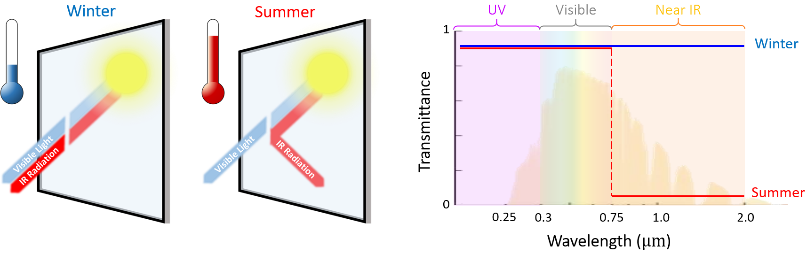{kind=link}
Para producir este efecto se utilizan materiales termocrómicos con cambio de fase aislante-conductor eléctrico.
El material más utilizado es el dióxido de vanadio (VO\(_2\)).
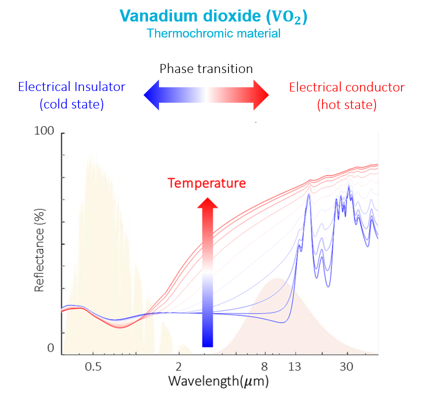{kind=link}
Sobre la temperatura de transición, el VO\(_2\) se comporta como un conductor eléctrico, con alta reflectancia en el espectro NIR. Bajo la temperatura de transición, el material se comporta como aislante térmico y la reflectancia dismuye.
La temperatura de transición intrínseca del VO\(_2\) es ~70°C. Sin embargo, esta temperatura puede ser modificada mediante dopaje desde los 70°C hasta cerca de los 10°C
Las ventanas termocrómicas operan agregando VO\(_2\) en pequeñas cantidades. Esto puede ser mediate una capa delgada sobre vidrio, o mediante particulas dispersas en un polímero transparente.
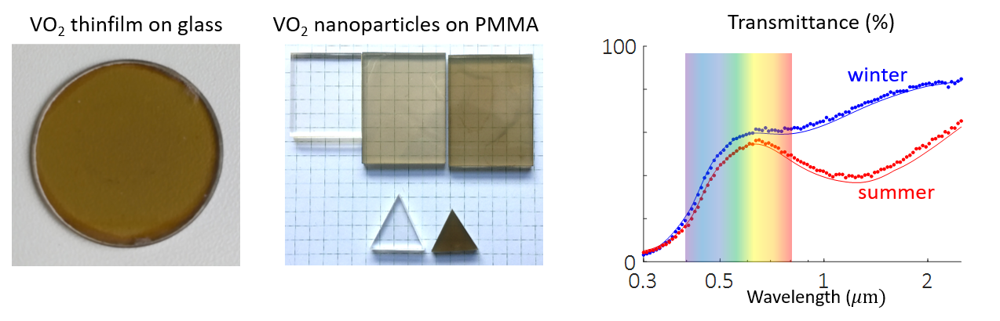{kind=link}
El desempeño de una ventana inteligente se caracteriza por la transmitancia lumínica (\(T_\mathrm{lum}\)), y la modulación de transmitancia solar (\(\Delta T_\mathrm{sol}\)):
donde \(T_\lambda\) es la transmitancia espectral del material (frio o caliente), \(\Delta T_\mathrm{sol} = T_\mathrm{sol}^\mathrm{frio} - T_\mathrm{sol}^\mathrm{caliente}\), y \(V(\lambda)\) es la eficiencia de luminosidad fotocópica
Además del VO\(_2\) existen otros materiales estudiados en ventanas inteligentes, tales como los hidrogel y las peroskitas.
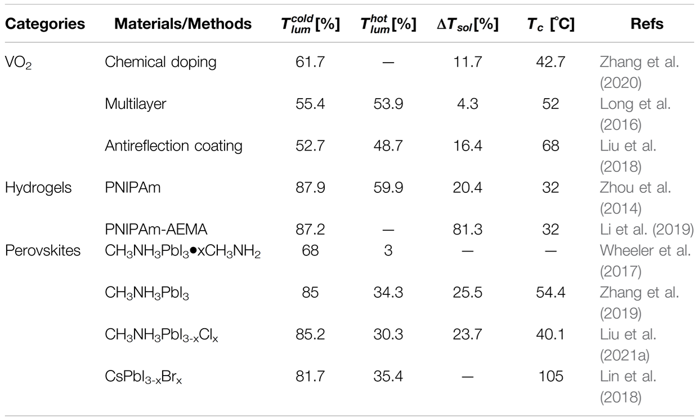{kind=link}
Dependiendo de las condiciones del clima, se estima que estas ventanas pueden reducir entre 25-80% el consumo eléctrico en sistemas de acondicionamiento de ambientes.
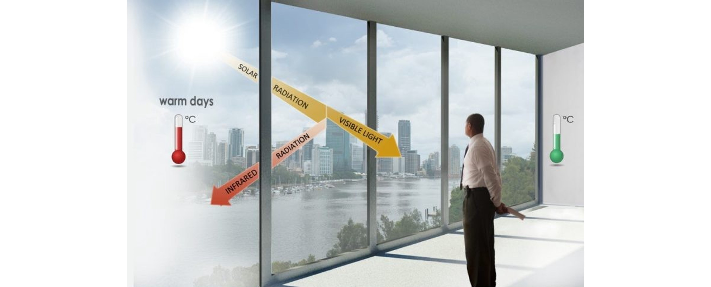{kind=link}
Las ventanas inteligentes son una tecnología relativamente nueva. Hoy en día, la mayoría de los fabricantes se enfocan en ventanas electrocrómicas. Esto debido a que las termocrómicas aun requieren mejoras en su vida útil, ya que los materiales termocrómicos son sencibles a la oxidación.
11.5. Enfriamiento radiativo pasivo#
Los materiales para enfriamiento radiativo pasivo, consisten en materiales con reflectancia selectiva, es decir, alta reflectancia solar (> 95%), y alta emisividad o transparencia en el espectro mid-IR.
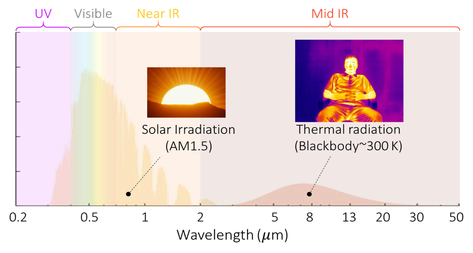{kind=link}
La reflectancia selectiva permite reducir las ganancias de calor por radiación solar, y al mismo tiempo, canalizar el calor radiativo disipado por los cuerpos a temperaturas bajo 400K.
Según estudios, esta tecnología podría reducir el consumo eléctrico en sistemas de aire acondicionado entre 15-40%.
El efecto de enfriamiento se intensifica en climas secos, ya que la atmósfera es transparente en el espectro \(\lambda\in[8, 13]~\mu\mathrm{m}\)
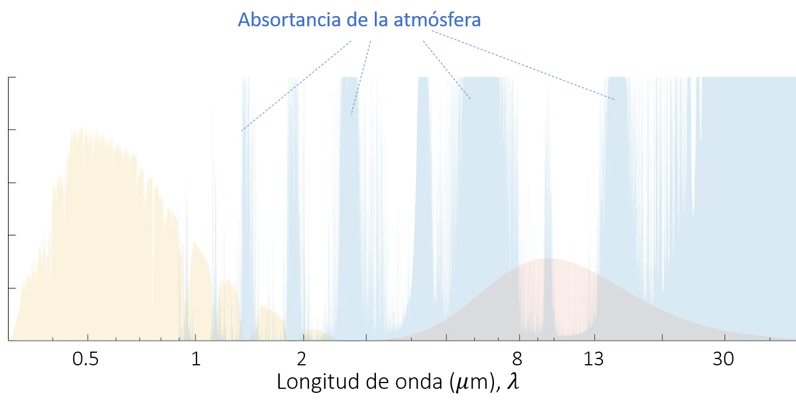{kind=link}
Esto implica que parte del intercambio radiativo ocurre entre el cuerpo y el universo.
En otras palabras, el enfriamiento radiativo utiliza al universo como sumidero térmico
Como resultado el material es capaz de alcanzar temperaturas de equilibrio bajo la temperatura ambiente a plena luz del día.
El enfriamiento radiativo pasivo es un mecanismo que ocurre naturalmente en climas secos. Este fenómeno explica las altas fluctuaciones térmicas que ocurren en el desierto entre el día y la noche.
Algunos seres vivos utilizan este mecanismo para enfriar su cuerpo naturalmente. Tal es el caso de las hormigas de plata en el desierto del Sahara.
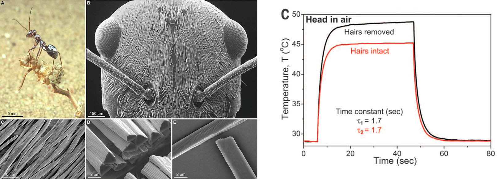{kind=link}
En el caso de las hormigas de plata. Los pelos producen efectos de scattering para longitudes de onda corta, aumentando la reflectancia, selectívamente, en el espectro visible. Como resultado, la hormiga adquire el color plateado característico.
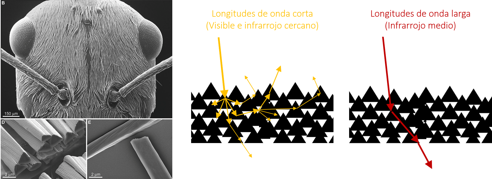{kind=link}
Artificialmente, el fenómeno puede ser reproducido utilizando materiales transparentes con porosidad inducida.
Para esto, comúnmente se utilizan polímeros. La porosidad puede ser inducida mediante un proceso llamado separación de fases.
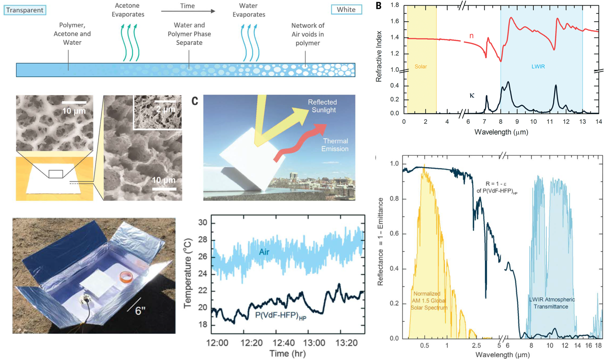{kind=link}
El siguiente estudio utiliza PVDF como polímero base
La investigación en enfriamiento radiativo pasivo ha avanzado rápidamente en los últimos años. A partir de estos estudios se han elavorado diversas alternativas en formato de pinturas, ropa o láminas adhesivas
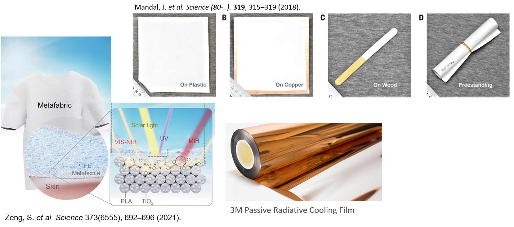{kind=link}
Enfriamiento radiativo pasivo es una tecnología emergente, con al menos 10 emprendimientos en el mundo. Skycool, es uno de los primeros en patentar esta tecnología. El siguiente video explica el funcionamiento de sus paneles de enfrmiamiento radiativo.
11.6. Referencias#
Kalogirou S. A. Chapter 6. Solar space heating and cooling in Solar Energy Engineering Processes and Systems, 2nd Ed, Academic Press, 2014